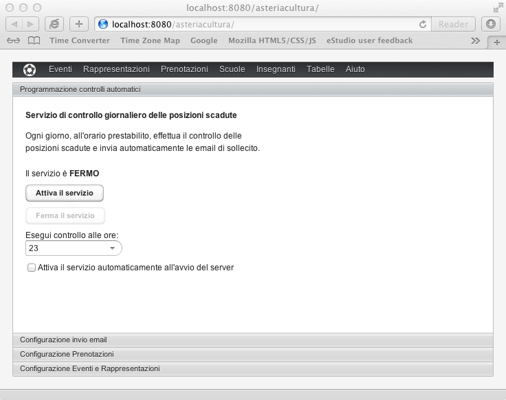

Ogni giorno il sistema invia automaticamente le email di sollecito relative alle posizioni scadute.
Le posizioni controllate sono le seguenti:
Opzioni da confermare: sono le prenotazioni non confermate con data di scadenza conferma superata.
Pagamenti da confermare: sono le prenotazioni con pagamento non confermato e data di conferma pagamento superata.
L'invio di queste notifiche è gestito automaticamente dal server a una certa ora e non è necessario essere collegati perché questo avvenga.
Ogni invio viene registrato nella pagina Eventi della scheda Prenotazione.
I parametri di invio si possono configurare in Configurazione -> Programmazione Controlli Automatici.

Tramite questa configurazione, il servizio può essere attivato o disattivato, e può essere regolato l'orario giornaliero in cui viene eseguito il controllo e l'invio delle email.
Ogni volta che viene inviato un sollecito, viene incrementato il livello di sollecito nella rispettiva Prenotazione.
Il livello di sollecito è visibile nella lista Prenotazioni alle colonne SC (Solleciti Conferma) e SP (Solleciti Pagamento).
Quando viene inviato un sollecito, la rispettiva data di scadenza viene automaticamente posticipata di 7 giorni. In tal modo il sollecito successivo verrà inviato dopo 7 giorni. Questo periodo è regolabile in Configurazione Prenotazioni.
Per la conferma prenotazione, vengono inviati 2 livelli di sollecito. Per la conferma pagamento, viene inviato 1 solo sollecito.
Le lettere usate per i solleciti sono le seguenti:
Primo livello di sollecito conferma: memo_scadenza_prenotazione
Secondo livello di sollecito conferma: congelamento_opzione
Primo livello di sollecito pagamento: memo_scadenza_pagamento
Il contenuto di queste mail si può modificare tramite la funzione Lettere Base.
Attenzione! Dopo il secondo livello di sollecito conferma, la prenotazione viene automaticamente congelata (vedi: Congelamento opzione)